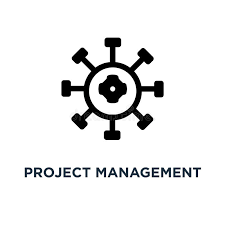

<div class="sidebar" [class.collapsed]="isCollapsed$ | async">
  <div class="logo">
    <div class="logo-icon-wrapper">
      
    </div>
    <span *ngIf="!(isCollapsed$ | async)">ProjectHub</span>
    <p *ngIf="!(isCollapsed$ | async)">Gestion de projets</p>
  </div>
  <nav class="navigation">
    <ul>
      <li routerLink="/dashboard" routerLinkActive="active">
        <i class="fas fa-tachometer-alt"></i>
        <span>Tableau de bord</span>
      </li>
      <li routerLink="/projets" routerLinkActive="active">
        <i class="fas fa-project-diagram"></i>
        <span>Projets</span>
      </li>
      <li routerLink="/my-tasks" routerLinkActive="active">
        <i class="fas fa-tasks"></i>
        <span>Tâches</span>
      </li>
      <li routerLink="/equipe" routerLinkActive="active">
        <i class="fas fa-users"></i>
        <span>Équipe</span>
      </li>
      <li routerLink="/calendrier" routerLinkActive="active">
        <i class="fas fa-calendar-alt"></i>
        <span>Calendrier</span>
      </li>
      <li routerLink="/rapports" routerLinkActive="active">
        <i class="fas fa-chart-bar"></i>
        <span>Rapports</span>
      </li>
      <li routerLink="/notifications" routerLinkActive="active">
        <i class="fas fa-bell"></i>
        <span>Notifications</span>
      </li>
      <li (click)="logout()" class="logout-btn">
        <i class="fas fa-sign-out-alt"></i>
        <span>Déconnexion</span>
      </li>
    </ul>
  </nav>

  <div class="sidebar-footer">
    <div class="user-info">
      <i class="fas fa-user-circle"></i>
      <span *ngIf="!(isCollapsed$ | async) && currentUser">{{ currentUser.prenom }} {{ currentUser.nom }}</span>
      <span *ngIf="!(isCollapsed$ | async) && !currentUser">Chargement...</span>
    </div>
    <div class="toggle-btn" (click)="toggleSidebar()">
      <i class="fas" [ngClass]="(isCollapsed$ | async) ? 'fa-chevron-right' : 'fa-chevron-left'"></i>
    </div>
  </div>
</div> 